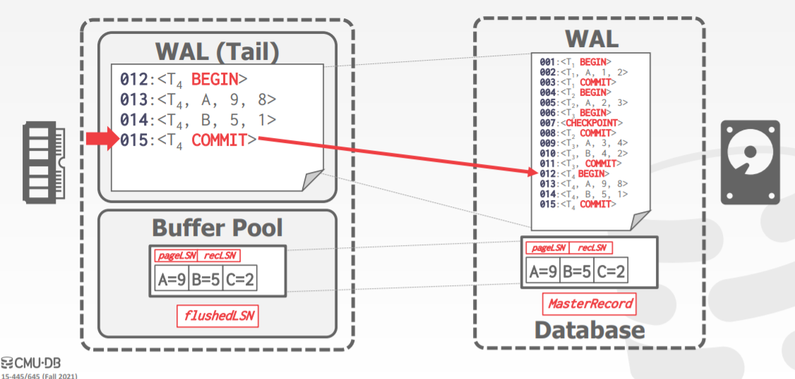
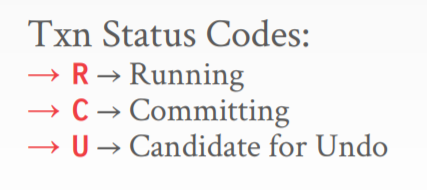

[CMU15445]:恢复算法
ARIES
利用语义的恢复和隔离算法(Algorithms for Recovery and Isolation Exploiting Semantics ,ARIES)，最早在90年代初由IBM提出，是一种基于WAL的故障恢复机制，ARIES的核心思想可以总结为三点：
Write-Ahead Logging(WAL)
- 在数据输出到磁盘之前，所有的更新日志必须首先输出到磁盘
- 必须使用Steal + No-Force的buffer Pool Policy
Repeating History During Redo
当从崩溃中恢复时，使用redo操作将数据库完全恢复成崩溃之前的样子
Logging Changes During Undo
在undo使同样要把undo操作本身记录到日志当中，以避免undo操作时再次崩溃进而发生重复undo的情况
WAL Records
将缓存在内存中的日志记录称为WAL Records, 与此同时，使用**日志序列号(Log Sequence Number, LSN)**来标识每个日志记录，除此之外还有一些特殊的LSN, 下面是其中的一部分
| 名称 | 位置 | 含义 |
|---|---|---|
| flushedLSN | 内存中的某个位置 | 磁盘日志区域当中所记录的最后一条LSN |
| pageLSN | buffer pool的每个page | 在该page上所做的最后一次更新操作对应的LSN |
| recLSN | buffer pool的每个page | 在该page上所做的首次更新操作对应的LSN |
| lastLSN | 每个事务中 | 事务所写的最后一条日志记录的LSN |
| masterRecord | 磁盘 | 最后一次checkPoint对应的LSN |
LSN
LSN本质上是日志文件 + 文件偏移量所组合成的一个编号，是单调递增的
flushedLSN
基于WAL机制，当page
x想要被刷新到磁盘时，那么就必须得确保：当日志记录从内存刷新到磁盘时，flushedLSN就会被更新为最新的LSN
pageLSN
当一个page被更新时，该页的pageLSN就得被更新为该更新操作对应的LSN
基本的日志布局大概如图所示

Normal Execution
首先讨论以下在普通执行过程中ARIES是怎么运作的，为了保持简单，首先给出一些前提条件
所有日志记录都能放进一个 page 中
写一个 page 到磁盘能保持原子性
没有 MVCC，使用严格的 2PL
使用 WAL 记录操作日志，buffer pool policy 为 Steal + No-Force
Transaction Commit
正常提交过程如下：
- 更新page, 记录日志到内存的WAL区域，同时更新page的pageLSN
- 事务提交，记录
日志到WAL区域，将所有 之前的日志记录刷新到磁盘 - 事务结束，记录
日志到WAL区域，此时不需要立即刷盘
Transaction Abort
在事务回滚过程中，需要引入一个新的LSN变量prevLSN，每个日志记录都会包含该字段，该字段保存着该日志记录的同一个事务的前一条日志记录，事务的首条日志记录的该字段设置为nil
事务发生回滚的流程如下：
更新page, 记录日志到内存的WAL区域，同时更新page的pageLSN
事务回滚，记录
日志记录到内存的WAL区域 沿着
preLSN构成的链表，从WAL的终止位置开始，向前进行回滚(undo)操作在回滚过程中，同样得需要记录回滚操作本身的日志，这些日志被称为补偿日志记录(Compensation Log Record, CLR)
这些日志记录只会在redo操作中使用到，因此也被称为
redo-only日志记录在CLR中还有一个额外的字段，被称为
UndoNextLSN字段，该字段记录了事务被回滚时，下一个需要被撤销的日志记录的LSN直到prevLSN为
nil为止，回滚结束，在WAL上记录日志记录
Checkpointing
接下来介绍几种不同的checkpoint机制
Blocking Checkpoints
之前所讨论过的checkpoint就是这种方法，该方法具体会分为几个步骤
- 阻止新事务产生
- 等待当前的活跃事务做完他们正在执行的更新操作
- 将脏页刷新回磁盘
该方法会在第二个步骤中产生较长的间断，在该间断时间内数据库是不会有任何更新的，这是不能接受的
Slightly Better Blocking Checkpoints
可以使用一些优化策略来对上面的checkpoint机制进行改进，改进后的方法如下
- 阻止新事物产生
- 暂停所有处于活跃状态的事务
这样做就不会产生间断，但是需要系统额外的维护一些信息，具体就是两个table
活跃事务表(Active Transaction Table, ATT)
当DBMS执行checkpoint时，会将此事系统中所有处于活跃的事务都记录在该表中，具体包含以下字段
事务ID(txnId)
事务状态(Status)
可取的状态如下:

lastLSN:事务最后执行的更新操作对应的LSN
在checkpoint执行完之后，每当事务提交或中止，就会将事务从该表中移除
脏页表(dirty page table, DPT)
该表的作用是跟踪buffer pool中那些正处于dirty状态的page,具体包含以下字段
- dirty page id
- recLSN: 导致page变为dirty的第一次更新操作对应的LSN
下面是一个该机制下checkpoint的例子
Fuzzy CheckPoint
Fuzzy CheckPoint是ARIES协议中使用的checkPoint机制，该机制允许任何事务在checkPoint线程在进行dirty page刷盘时同时进行自己的更新操作，其将checkPoint表示成了一个区间
- <CHECKPOINT-BEGIN>: 表示系统开始刷盘
- <CHECKPOINT-END>：表示checkPoint刷盘结束，此时会将<CHECKPOINT-BEGIN>对应的LSN刷新到磁盘的
masterRecord当中
注意，在<CHECK-BEGIN>与<CHECK-END>之间的任何新开始的事务都不会被添加到ATT,而DPT则正常
Recovery Phases
ARIES的恢复算法分为三步：
- 分析阶段(analysis)：从 WAL 中读取最近一次 checkpoint，找到 buffer pool 中相应的脏页以及故障时的活跃事务
- 重做阶段(redo)：从正确的日志点开始重做所有操作，包括将要中止的事务
- 撤销阶段(undo)：将故障前未提交的事务的操作撤销
下面是整个的流程框图
Analysis Phase
- 从最近的<CHECKPOINT-BEGIN>开始(从masterRecord中读取)，向下遍历WAL
- 如果发现<TXN-END>, 将该事务从ATT中移除
- 否则将其添加进ATT(如果之前ATT中不存在的话)
- 如果记录的类型为<COMMIT>, 那么将ATT中事务状态设置为
commit - 如果记录类型为其它，那么将ATT中事务状态设置为
undo
- 如果记录的类型为<COMMIT>, 那么将ATT中事务状态设置为
- 特别的，如果发现记录类型为<UPDATE>, 并且DPT中没有该page, 那么将该page添加进DPT, 然后将其recLSN = LSN
注意这里是分析阶段而不是checkpoint，可以将T96加入ATT
当分析阶段结束时
- ATT 告诉 DBMS 在发生故障时，哪些事务是活跃的
- DPT 告诉 DBMS 在发生故障时，哪些脏数据页可能尚未写入磁盘
Redo Phase
该阶段的目的是将数据库恢复成crash之前的状态，所以需要进行重复历史(包括CLRS)，ppt中可能会进行冗余redo的情况，即数据已经被刷新回磁盘但是再次刷新，教材中给出了避免冗余的方法
从 DPT 中找到最小的 recLSN，从那里开始重做更新记录和 CLR
redo的具体操作包括：
- 将数据项设置为新值
- 将page的
pageLSN设置为LSN
在Redo Phase的最后，为ATT表中的每个状态为commiting的事务追加上
Undo Phase
该阶段的目的在于回滚那些在crash时仍然处于活跃状态的事务，即ATT中那些状态为U的事务
利用lastLSN,倒序进行undo操作，每次进行undo操作，同样需要进行CLR的记录
一些问题
如果 DBMS 在故障恢复的 Analysis Phase 崩溃怎么办？
再执行一次故障恢复算法就好
如果 DBMS 在故障恢复的 Redo Phase 崩溃怎么办？
再执行一次故障恢复算法就好
本博客所有文章除特别声明外，均采用 CC BY-SA 4.0 协议 ，转载请注明出处！